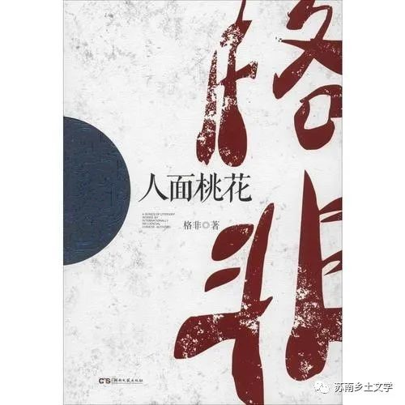
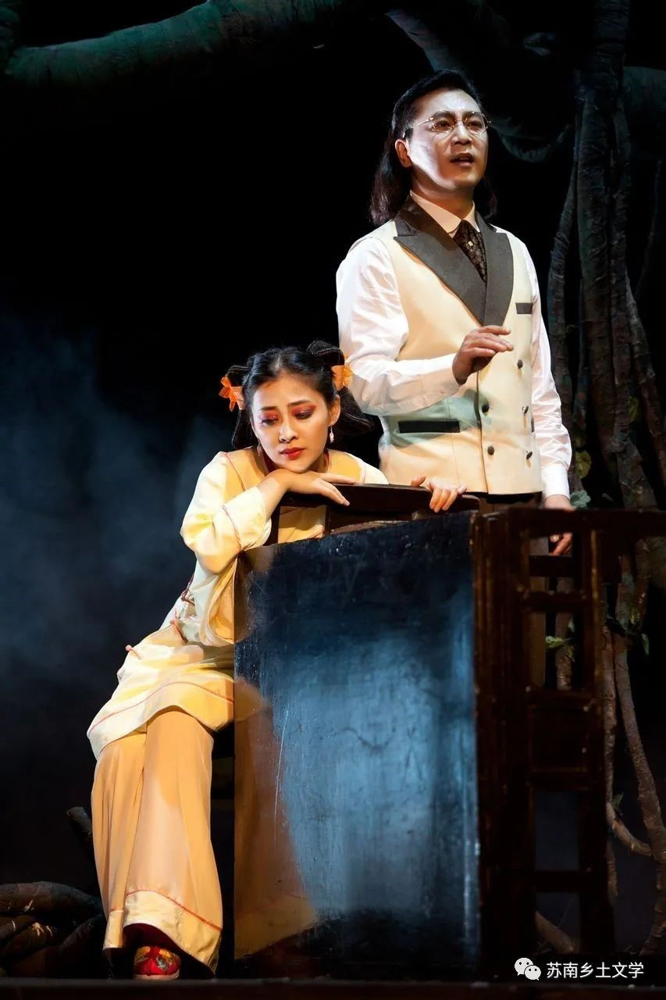

《人面桃花》
《人面桃花》是作家格非《江南三部曲》中的第一部长篇小说。小说讲述的是一个女人追寻她的梦的故事，这个梦包含两个方面，一是她的爱情，另一是她的理想。因此，整个故事的主旨就落在了“追寻”二字。它同样包含两层涵义：一是主人公陆秀米追寻她的梦，另一是叙述者带领读者追寻那段业已逝去的革命历史。
1.经济:
农村实行收佃制，地主提供土地，佃户向地主交粮。地主的土地来源或是祖上遗产，或是破产之人抵押。
每到这时，花二娘总是笑嘻嘻地对他们说：“看准了，报个数儿。”佃农轻声报过数之后，花二娘再去核准，然后高声报出斤两，……。母亲道：“我家这闺女，别看她个子长得这么大，心眼倒是一点没长。白吃了这许多年的饭，哪里懂什么事？”
2.土匪
当时农村土匪众多，伪装成工匠替人家干活，实则为搜刮油水。
不错，我是泥瓦匠，庆生是木匠，我们替人干活，收人工钱。可那只是为了遮人耳目罢了。关键是，要探明雇主的家底。我们对穷人没什么兴趣，若是碰上了没什么油水的穷棒子，就只有自认倒霉，干完活，收点工钱就完事。
官匪勾结的情况严重，社会腐败。
“怎么还要给官府交钱？”“自古以来官匪就是一家。”韩六叹了口气，“不仅要交钱，还要四六分账。原来是五五分账，从去年开始变成了四六分账。也就是说，他们得来的赎金，有六成要交给官府。没有官府的暗中袒护，这个营生就做不下去。你要是不交，他们立马就派官兵来围剿，半点也含糊不得。原先是每年做一回，大多是霜降之后到除夕之前这段时间动手，现在每年少不得要绑个五六个人来。一般是花票和石头。花票指的是姑娘，绑小孩他们叫搬石头。”
3.官僚制度
官场沉浮、朋党之争现象存在。
先生答道：“你父亲在官场受人排挤，一腔怒火无处可发，最后只得拿书来煞气。似乎一生失败，皆为读书所误，在他不曾发疯的时候，他就嚷嚷着要把全村的书尽数烧掉，说来说去，还是贪恋官场声色。
4.封建迷信习俗
农村辟邪作法流程
随后是和尚作法，道士驱鬼。再往后，阴阳先生和瞎眼神巫也跟着来了，把那麻衣相法，六壬神课，奇门遁甲全都试了个遍。
她让村里铁匠铺的王七蛋、王八蛋兄弟连夜打造铁链铜锁，她要把父亲像牲口一样地拴起来。她来到土地庙，把自己的想法和土地一说，神仙满口答应；与观音一说，观音立刻托梦给她，叫她快快实施，而且铁链子要造得越粗越好。
5.教育：
主人公拜先生为师，拜师需要交束，教材是《鲁仲连义不帝秦》《诗经》《纲鉴》。
（1）嚷着要把拜师时的束尽数退还。
（2）你先把那《鲁仲连义不帝秦》背来我听，其余无须多问。先生又让她背《诗经》，秀米就问他背哪一篇？背过《诗经》，又背《纲鉴》。
6.婚嫁观争论
张季元与翠莲争论女子是否应该嫁人，是否应该生孩子等等问题。
“这姑娘大了不嫁人，爷娘留她在家煮了吃？”“这个你就不懂了。”张季元道，似乎对翠莲的话不屑一顾。，“可照你这么说，这天下的女子都不嫁人，都不生孩子，这世上的人早晚还不都死光啦。”“谁让你不生孩子啦？当然要生孩子，只是不用嫁人。”“不嫁人，你到石头缝里弄出孩子来不成？”“你但凡看中一个人，你就走到他家去，与他生孩子便了。”“不需要三媒六聘？也不用与父母商量？”“正是。”“要是那女孩儿的父母不同意怎么办？他们拦住门，不让你进去。”“那好办，把他们杀掉。”……“在未来的社会中，每个人都是平等的，也是自由的。他想和谁成亲就和谁成亲。只要他愿意，他甚至可以和他的亲妹妹结婚。”
感悟
读完这本《人面桃花》，我最大的感受就是这本书里面都具有古典意境美。首先标题“人面桃花”出自“人面桃花相映红”，与主人公的祖父陆侃理想中的“桃花源”之意境相合，与主人公秀米之后到达的花家舍的江湖“桃花源”也相互照应。文章的开端就是祖父出走，因为《桃源图》而疯癫，从此，人与桃花这条羁绊，就如标题一样，人面桃花相映，再难分割。
这本小说巧妙之处在于种种理想中的乌托邦形态都通过秀米的人生行径进行串联，首先是祖父的古典形式的乌托邦：普济人民安居乐业，以陆侃出走告终；而后，秀米被拐到花家舍，看到的是王观澄理想的仙境，看似一片祥和，实则也是一种江湖的不成熟的状态；最后她回到家乡创办学堂，渴望建立张季元提及的“大同世界”，又失败。但这对于祖父的“桃花源”，其实已经是现代形态的带有革命性质的乌托邦了。三种乌托邦都无法实现，作者想问的是：到底如何才能建立真正的桃源？革命可以吗？也许这就是《江南三部曲》的来源，这就是作者对那段历史的最真实的记录。
这本小说是带有乡土气息的革命小说，我认为这对于我们小组研究苏南地区的乡土文学和乡村风貌还是非常有参考意义的，尤其是那一段已经逝去的新旧交替的革命历史。